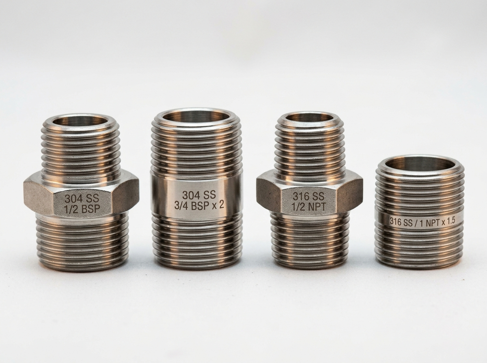

SS 304, 316, MS and brass hex, barrel, close and reducing nipples with heavy-wall options, supplied from Ahmedabad to Ramagundam, Godavarikhani, Peddapalli, Mancherial, Jaipur, Kaghaznagar and Sirpur.
Ramagundam is where a large part of Telangana's electricity and fertiliser comes from. A very large coal-fired power station runs here around the clock, a modern urea plant feeds the farm belt, Singareni's underground and open-cast mines supply the coal from Godavarikhani and Mancherial, and a further power plant and paper and cement units fill the Mancherial and Kaghaznagar belt. Summer temperatures pass 44 degrees, coal dust and fly ash coat everything, and ammonia, steam and water lines run at plant scale.
Sunrise Industries makes and stocks stainless steel, mild steel and brass nipples in Ahmedabad. We supply heavy-wall options for steam, instrument and high-temperature lines, we're clear about which materials ammonia service rules out, and we plan around overhaul dates.
The Ramagundam industrial belt is built around a few very large plants. A super thermal power station here, among India's biggest, burns coal brought from nearby Singareni mines, and a floating solar installation on its reservoir adds a newer layer. A modern fertiliser plant produces urea and ammonia on the same site complex. Godavarikhani, Mancherial and Jaipur carry underground and open-cast mines, a further coal-fired plant and a web of workshops. Further north, Kaghaznagar and Sirpur add paper-mill and cement operations, and Peddapalli is the district's commercial centre.
Such plants work to overhaul schedules. Boilers, turbines, ammonia converters and coal-handling plants are shut at planned intervals, and contractors work against the clock with a bill of materials. They also work to specifications: instrument lines, boiler-feed lines, cooling water, demineralised water, ash slurry and ammonia each have their own requirements.
For a nipple supplier, that means matching grade and wall to the fluid, being honest about what stainless and what brass can't do, and delivering before the shutdown.
 Precision Joints for Ramagundam–Peddapalli Industrial Plants
Precision Joints for Ramagundam–Peddapalli Industrial Plants

Hexagonal center for positive spanner grip without thread distortion. Standard equal and reducing sizes.
Click Here
Continuous reach between valves, tanks, headers and chillers in plant rooms.
Click Here
Fully threaded length for tight manifold links and compact equipment packages.
Click Here
Steps line size up or down smoothly between equipment ports and headers.
Click Here
Barbed hose grip paired with precision machine pipe thread for utility wash-down.
Click Here
Machined to drawing with mixed BSPT/NPT threads, non-standard hex flats, and special lengths.
Click HereNeed a custom SS nipple that isn't in any catalogue? Our engineering team in Ahmedabad takes your drawing or sample from first prototype to full-scale production, with material selection, CNC machining, threading and inspection all done under one roof. We machine hex, barrel, close and reducing nipples in SS 304 and SS 316, in BSP, BSPT and NPT threads, and in special lengths, mixed threads and non-standard hex sizes. With 10+ production lines, an ISO 9001:2015 certified quality system and fast dispatch to Ramagundam–Peddapalli, we deliver precision components that fit the first time.

| Application / Duty | Grade | Type | Thread / Wall | Engineering Note |
|---|---|---|---|---|
| Boiler and steam small-bore | SS 304 / 316 | Barrel, hex | Sch 80, BSPT | High-temperature sealant; confirm duty |
| Instrument tappings | SS 316 | Hex, close | Sch 80, NPT | Often NPT; confirm with your engineer |
| DM-water and cooling-water lines | SS 304 | Hex, barrel | Sch 40, BSPT | Heat and scale |
| Ash-slurry-side utilities | MS / SS 304 | Hex, barrel | Sch 80, BSPT | Abrasion; inspect often |
| Coal-handling and mine hydraulics and air | MS, heavy wall | Hex, barrel | Sch 80, BSPT | Dust and vibration |
| Fertiliser plant water, steam & instrument lines | SS 304 / 316 | Hex, close | Sch 40 / 80, BSPT | Never use brass on ammonia |
| Paper-mill steam and process water | SS 304 / 316 | Barrel, hex | Sch 40 / 80, BSPT | Steam and chemicals |
| Hotel and township plumbing | SS 304 | Hex, barrel | Sch 40, BSPT | Hidden joints |
Ammonia service has strict material rules: brass and copper alloys are NOT suitable for ammonia. Typical selections only. Pressure class, temperature and code compliance are set by your design engineer.

SS 304 & 316 with stamped grade & thread identification.
NPT and BSP threads machined to exact mating specs.
Ammonia, urea solution, boiler-feed water, DM water, ash slurry and steam each need different materials. Name the fluid, concentration and temperature. Never use brass or copper alloys on ammonia. We'll tell you honestly if a duty needs a higher alloy than we supply.
Steam and boiler lines need a heavier wall, the right grade and a sealant rated for the temperature. Send the figures, and ask your design engineer to confirm what a threaded joint may carry.
Parts must be on site before the window opens. Send the full list and the date, and we'll say honestly what we can meet. Contractors should also tell us what documents their client requires.
Many mines and workshops run long-serving machines. Send the worn nipple or a measured sketch, and we'll machine a match.
Fine, abrasive dust grinds into threads and wears fittings. Wipe clean before assembly, and keep spares sealed.
Lines carrying ash slurry wear from the inside. Choose a sturdy wall and inspect on a schedule.
Temperatures above 44 degrees bake sealants and loosen joints. Use sealants rated for the temperature.
Planned overhauls have fixed dates, and missing small parts delay restart. Send lists weeks ahead.
Fertiliser service restricts materials. Check each line against your process specification.
Clean threads before every assembly. Dust and old sealant cause leaks.
Use a high-temperature sealant on steam lines, and anti-seize on stainless threads.
Don't over-tighten. Tapered threads seal by wedging, and heat adds stress.
Allow for expansion with supports or flexible sections.
Use only the materials your process specification allows on ammonia and chemical lines.
Re-check joints after the first heat cycles.
Record the grade and thread of replaced parts for the next audit.
When the catalogue size isn't the size you need. We CNC-machine nipples to drawing or sample in stainless steel, mild steel, brass and aluminium:
We also supply SS and MS couplings, flanges, IC investment-cast pipe fittings, seamless, welded and EFW pipes and tubes, sheets and plates, billets, and laser cutting, fabrication and powder coating. One enquiry for the whole overhaul list.
Manufactured and stocked under one roof at Sunrise Industries.
View All Products →Turbine steam tappings, boiler-feed water lines, drain loops and instrument manifolds.
Corrosion-resistant stainless utility lines, high-pressure steam and instrument headers.
Hydraulic systems, dewatering equipment and heavy plant workshop utilities.
Digester utilities, paper mill steam headers and cement plant conveying lines.
Heavy-wall piping connections on fly ash and slurry transport loops.
Turnkey overhaul and annual maintenance contractors operating in Peddapalli district.

Heavy-wall and stainless options from one supplier.
Overhaul-window planning.
Plain talk on materials for ammonia and chemical service.
Custom machining for older equipment.
ISO 9001:2015 certified manufacturing.
Honest lead times on long-haul transit.
Direct dispatches with established road freight carriers across Telangana.
Send your specification and size list, with the date you need the parts on site.
Get a quote with price, availability and timeline.
We supply or machine, then inspect and pack for a long road journey.
Dispatched by road freight via Hyderabad and Karimnagar straight to Ramagundam/Peddapalli.
Tell us the overhaul date, and we'll plan backward from it.